Fit status 0Covariance quality 3310 CR channels108 High-Δm + 202 Low-Δm406 fit parameters129 constrained nuisances277 bounded rate parametersExact Nb CR→VR TFTF MC stat propagatedVR excluded from likelihoodSR maskedFit auditVR validationParameters + full covariancePull summaryCR postfit yieldsVR postfit yields
Nuisance pulls and constraints
All 129 constrained nuisances; bounded normalization and Sγ rate parameters are excluded from pull coordinates.
High-Δm control-region MET/recoil postfit
Combined-fit view: 2024 and 2025 yields are summed bin-by-bin on the original physical CR axis; the final bin includes the full overflow.
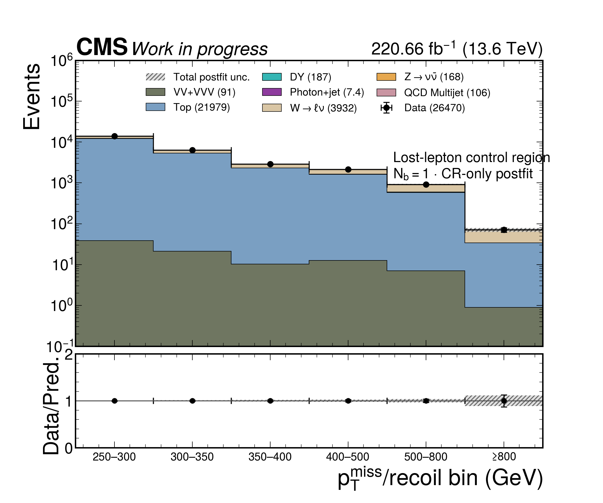
LLCR · Nb=1 2024+2025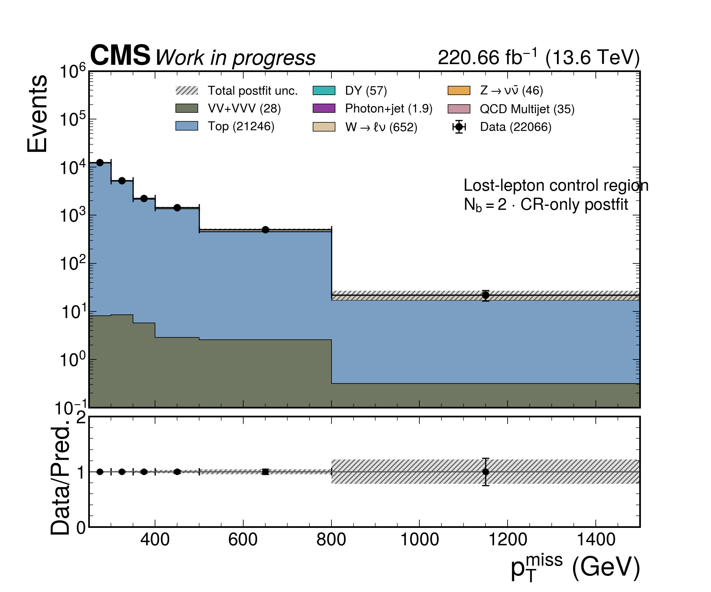
LLCR · Nb=2 2024+2025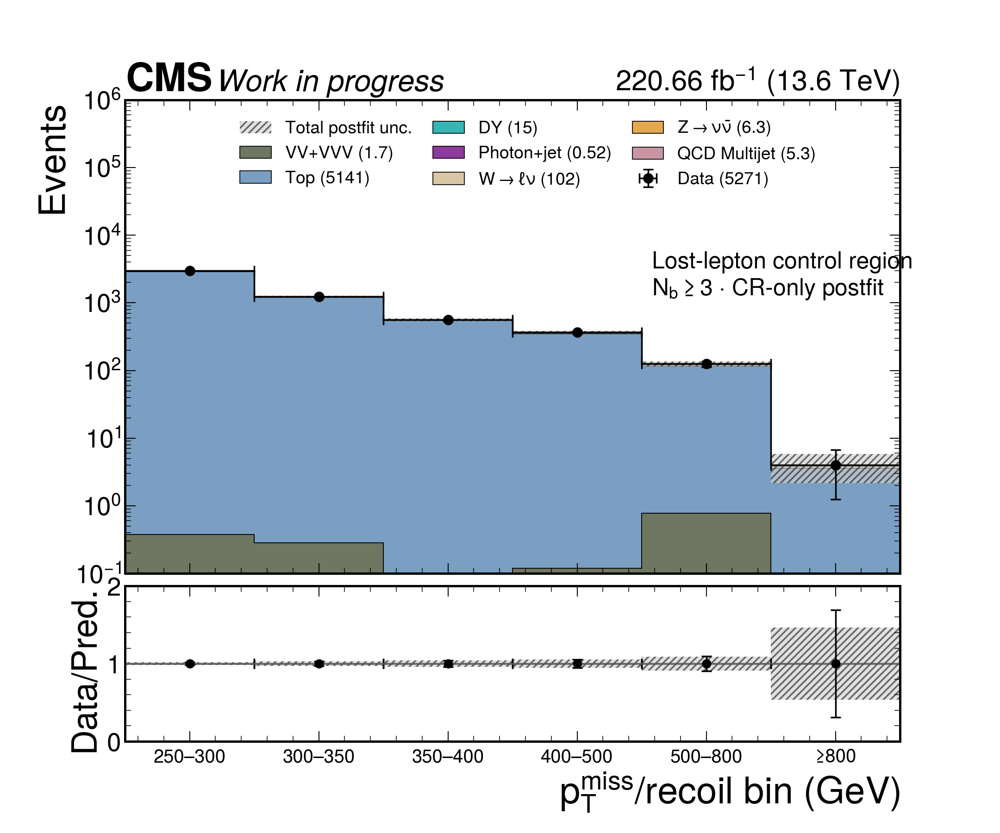
LLCR · Nb≥3 2024+2025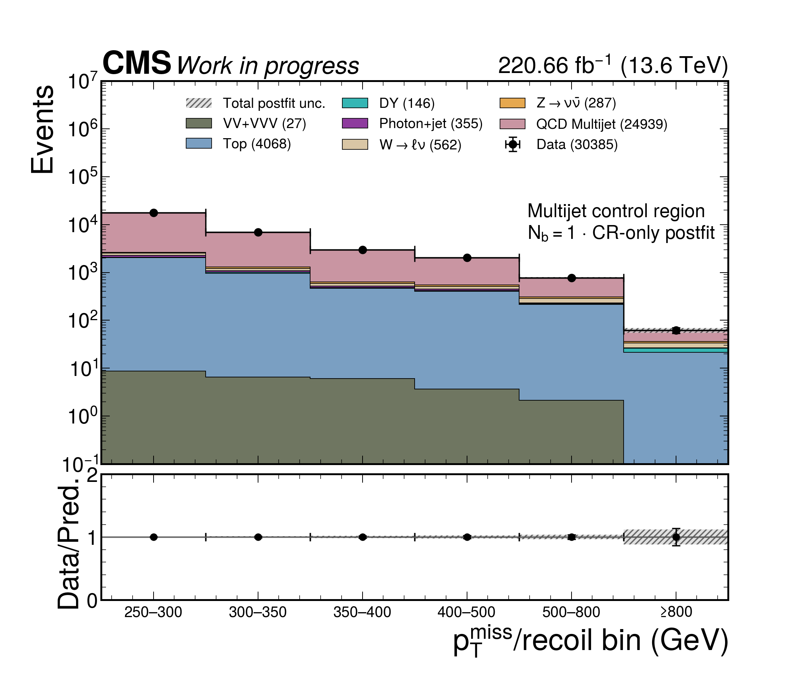
QCDCR · Nb=1 2024+2025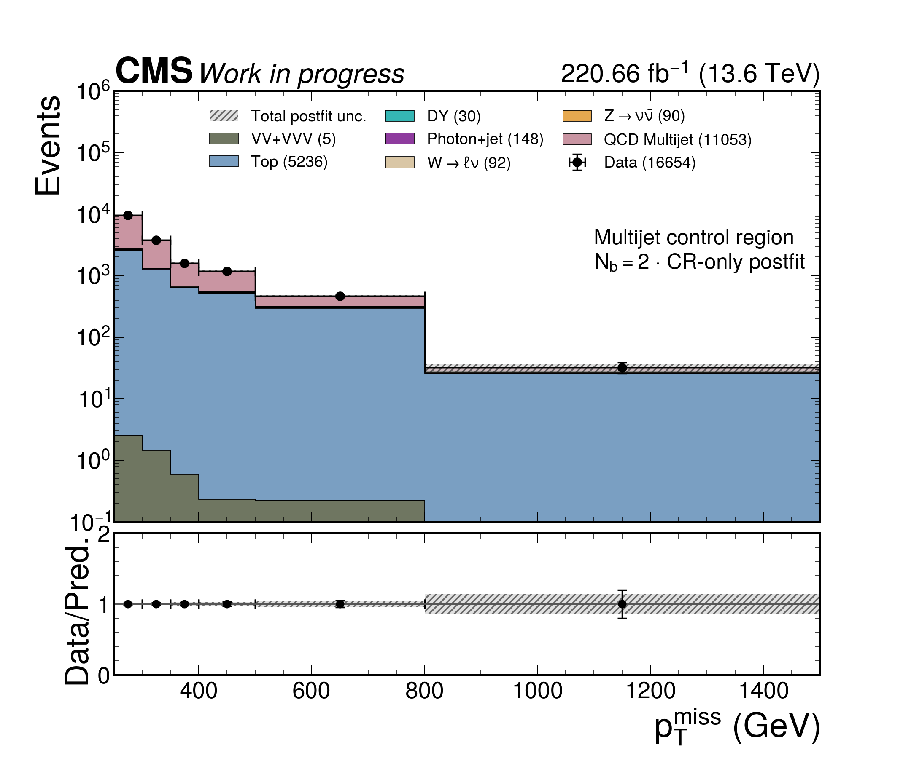
QCDCR · Nb=2 2024+2025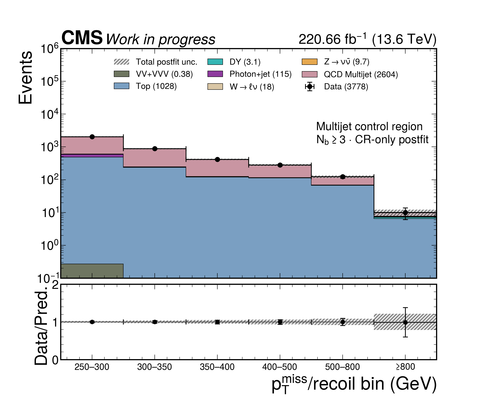
QCDCR · Nb≥3 2024+2025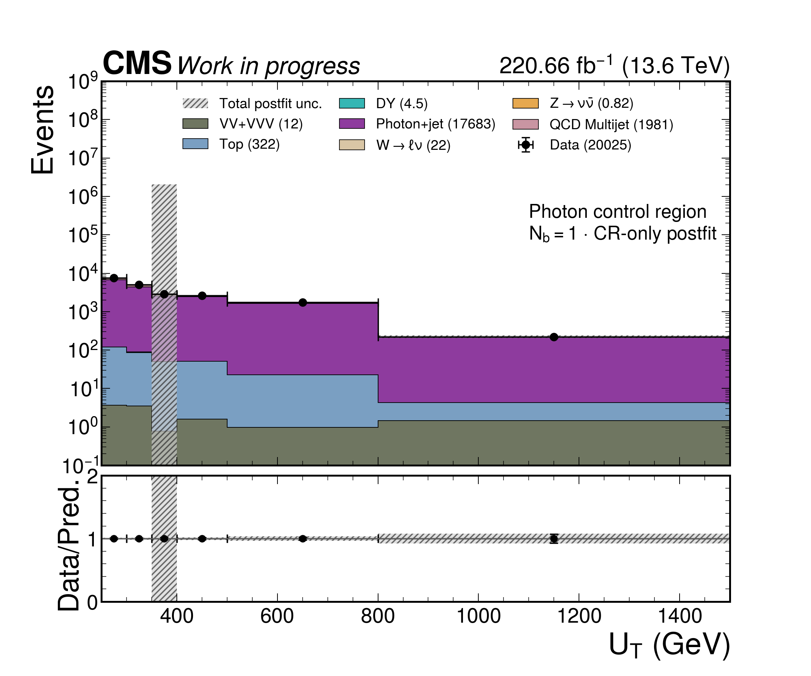
GCR · Nb=1 2024+2025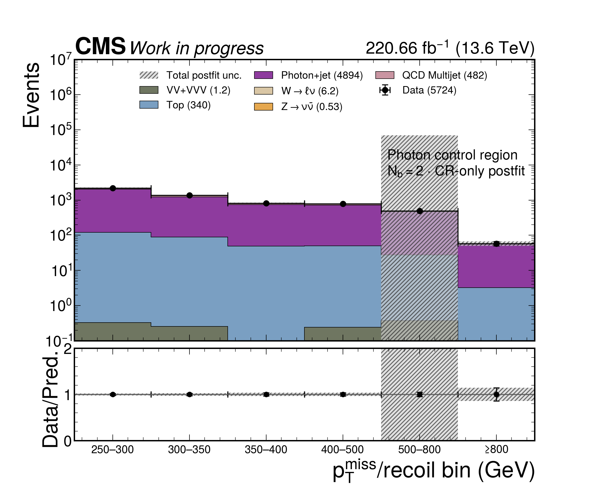
GCR · Nb=2 2024+2025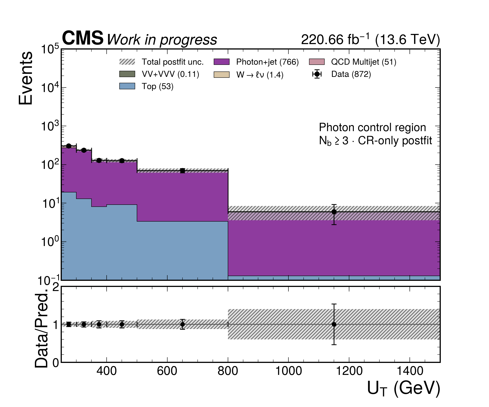
GCR · Nb≥3 2024+2025Show 2024 control-region plots
Low-Δm control-region postfit
Canonical 34-bin Low-Δm category ordering. Both years are summed bin-by-bin; QCDCR bin 25 is visibly empty because it is absent from the likelihood in both years.
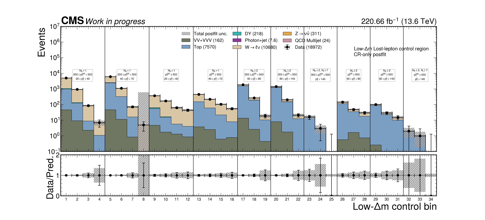
Low-Δm LLCR 2024+2025 · 34 bins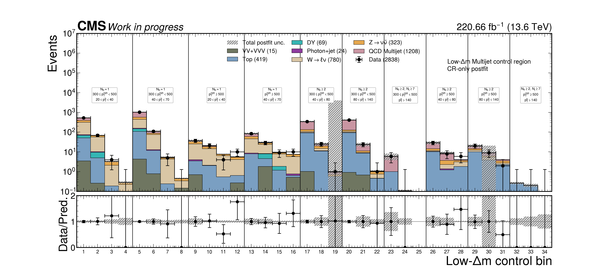
Low-Δm QCDCR 2024+2025 · 34 bins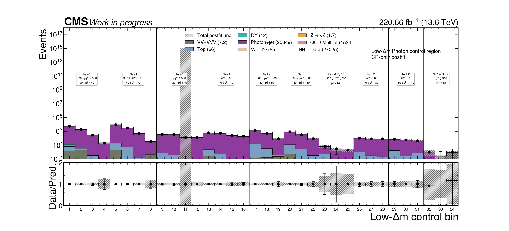
Low-Δm GCR 2024+2025 · 34 binsShow 2024 Low-Δm control-region plots
Show 2025 Low-Δm control-region plots
High-Δm VR · 2024 + 2025 combined
220.66 fb−1
High-Δm VR · 2024
109.82 fb−1
High-Δm VR · 2025
110.84 fb−1